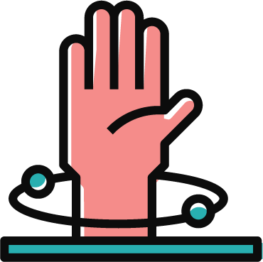

About
Guides
Community
About
Guides
Community
The community is under construction!
You can see what the community will look like as a clickable prototype.
Community for desktop
Community for mobile
